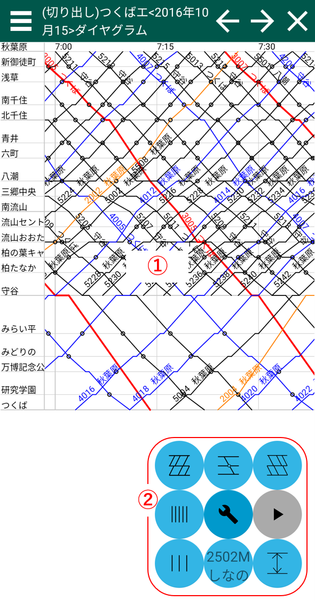
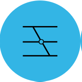
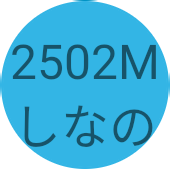
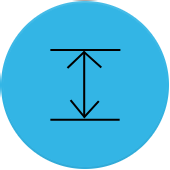

ダイヤグラム画面
スクショの番号の対応した説明があります。 ①：ダイヤ線描画領域
タッチ操作を行うことができます- 一本指でドラッグ・フリック→ダイヤ画面を平行移動させます。
- 二本指でピンチイン・アウト→ダイヤ画面を拡大縮小させます。
- 一本指でダイヤ線を長押し→列車編集できます。
②ダイヤオプション領域
ダイヤオプションの表示・非表示を切り替えます 上り時刻表の表示・非表示を切り替えます。
上り時刻表の表示・非表示を切り替えます。停車マークの表示・非表示を切り替えます。
下り時刻表の表示・非表示を切り替えます。
縦補助線(時刻)の本数を増やします。
縦補助線(時刻)の本数を減らします。
タップするたびに、列車番号・列車名の表示非表示を切り替えます。
ダイヤグラムの縦方向のサイズを画面にfitさせます。
 ダイヤグラムを現在時刻に移動し、時刻経過とともに随時ダイヤグラムを自動スクロールします。
ダイヤグラムを現在時刻に移動し、時刻経過とともに随時ダイヤグラムを自動スクロールします。 ダイヤグラムの自動スクロールを一時停止された状態です。
ダイヤグラムの自動スクロールを一時停止された状態です。